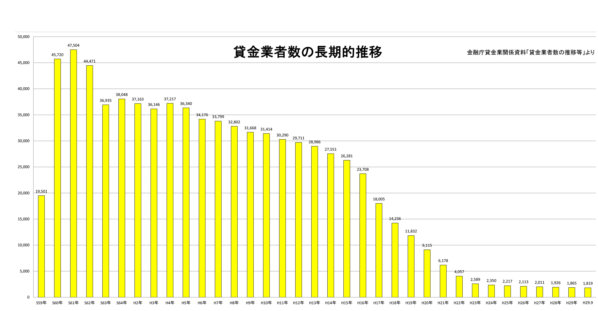
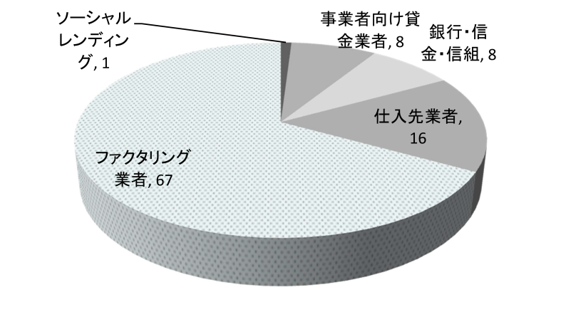
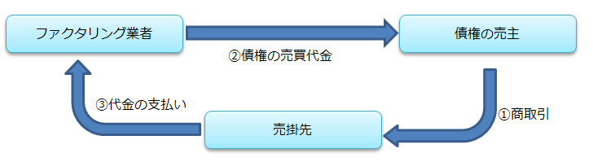

HOME ＞高金利被害の実態
高金利被害の実態
株式会社クレイリッシュ
代表取締役
髙木 秀男
近年は、貸金業者の減少に伴い、非正規貸金業者（ヤミ金融）がその数を増し、警察による摘発を回避するため、巧みにその姿を偽装しています。筆者が生業とする事業者向け金融の分野で急増したのが、貸金業法や利息制限法の規制が及ばない「ファクタリング（債権の売買）」を偽装したヤミ金融業者（以下「似非ファクタリング」という）です。
金銭の貸付に関しては利息制限法でその上限が厳しく制限されています。しかし、債権の売買については貸金業者の利息に相当する手数料の上限を規制する法律が無く、かつ、業者の登録制度もないため、法令順守態勢に問題のある企業も参入する事が可能です。
これら似非ファクタリングの実質金利は年率100～360％で、その被害者は全国に拡大し、いずれ社会問題化する事は必至と思われます。本稿では似非ファクタリングの手口や仕組みを分析し、その被害を推定します。
金銭の貸付に関しては利息制限法でその上限が厳しく制限されています。しかし、債権の売買については貸金業者の利息に相当する手数料の上限を規制する法律が無く、かつ、業者の登録制度もないため、法令順守態勢に問題のある企業も参入する事が可能です。
これら似非ファクタリングの実質金利は年率100～360％で、その被害者は全国に拡大し、いずれ社会問題化する事は必至と思われます。本稿では似非ファクタリングの手口や仕組みを分析し、その被害を推定します。
1.（似非ファクタリング増加の背景）
貸金業者の登録制度発足して２年が経過した昭和61年当時、貸金業者の登録件数は最多の４万７５０４件を記録しました。しかし、その後減少の一途を辿り、平成29年9月末日の登録件数は最盛期の3.8％にまで減少し、1819件です。また、現存する貸金業者は都市部に集中しているため、地方では、貸金業者不在の空白地帯が大半を占めるようになりました。

貸金業者が減少した要因は
①法定の上限金利が段階的に引き下げられ採算の維持が厳しくなった。
②過払金返還請求により多額の損失が生じた。
③リーマンショックの信用収縮により資金調達が困難となった時期が生じた。
などが考えられます。
多重債務者を減らすべく改正され、平成22年に完全施行された貸金業法ですが、多重債務者だけでなく貸金業者までも減らすという皮肉な結果になり、その法律は貸金業禁止法と揶揄されています。
①法定の上限金利が段階的に引き下げられ採算の維持が厳しくなった。
②過払金返還請求により多額の損失が生じた。
③リーマンショックの信用収縮により資金調達が困難となった時期が生じた。
などが考えられます。
多重債務者を減らすべく改正され、平成22年に完全施行された貸金業法ですが、多重債務者だけでなく貸金業者までも減らすという皮肉な結果になり、その法律は貸金業禁止法と揶揄されています。
2.（高金利被害の推移）
東京都を管轄する警視庁が公表する無登録高金利事犯（ヤミ金融被害）の検挙状況の推移では、平成22年の検挙事件数307件に対し平成27年には140件と半減し、また、被害人員は７万人から２万人に減少していますが、被害金額だけは114億円から161億円に増加しています。
警視庁「無登録高金利事犯の検挙状況の推移」より
|
平成22年 |
平成23年 |
平成24年 |
平成25年 |
平成26年 |
平成27年 |
検挙事件数 |
307 |
254 |
190 |
168 |
151 |
140 |
検挙人員 |
646 |
539 |
315 |
337 |
258 |
267 |
検挙法人数 |
9 |
10 |
2 |
7 |
5 |
0 |
被害人員 |
76,041 |
50,268 |
31,398 |
30,936 |
16,654 |
20,588 |
被害額 |
114億円 |
117億円 |
110億円 |
150億円 |
98億円 |
161億円 |

これは、被害者一人当たりの被害額が14万円から78万円に増加していることを意味します。つまり、ヤミ金融の被害者が、比較的借入額の少ない消費者から、借入額の大きな事業者に移行しているのではないかと推測できます。したがって、消費者の高金利被害は減り、事業者の高金利被害は増えていると考えるのが自然です。昭和のヤミ金融は、多重債務者やブラックリスト登録者でも「担保や保証人不要で融資します」と宣伝し、ある意味でヤミ金融であることを公言していました。そして、警察の捜査の手が及ぶと店舗を閉鎖し、別の場所で異なる屋号を用いて営業を継続し、その融資対象は消費者と事業者です。
一方、平成のヤミ金融は似非ファクタリングに転換、この方法ならば警察に検挙される可能性が低く、事務所を転々とする必要もない、まさに安住の地です。しかし、売掛金の売買を偽装する必要から消費者向け貸付から撤退し、事業者向け貸付に専念することになりました。以上の経緯から、高金利被害者が、消費者から事業者へ移行しているのではないかと考えます。
似非ファクタリングの被害を正確に把握する事はできませんが、それらを推測する唯一の客観的材料は「債権譲渡登記」です。この登記は、債権を担保とする貸付け又は、商取引の債権保全を目的として、他の債権者に対する対抗要件を具備するために登記されていますが、債権の売買を偽装した似非ファクタリングに於いては頻繁に登記されています。
このため、これら登記の「債権の譲受人」に着目すると、似非ファクタリングの実態を推測する事が可能です。筆者は平成28年11月より翌年10月までの１年間に申請された債権譲渡登記のうち、検証可能な419件（実際の登記の２割程度）の債権譲渡登記の「債権の譲受人」を調べました。
その結果、「ソーシャルレンディング業者」が１％、「事業者向け貸金業者」が８％、「銀行・信金・信組」が８％、「仕入先業者」が１６％、残りの６７％にあたる２７９件が「ファクタリング業者」でした。その内２６４件は貸金業登録の無いファクタリング業者ですがそれが無いから似非ファクタリングであるとは限りません。仮に、貸金業登録の無い業者の７割が似非ファクタリングであると仮定した場合、その件数は１８４件、筆者が検証した債権譲渡登記が全体の２割程度ですから、似非ファクタリングの推定債権譲渡申請件数は年間９２０件となります。
また、債権譲渡登記を伴う貸付は、４件につき１件程度の頻度であることから、似非ファクタリングによる年間の推定貸付件数は３６８０件に達します。さらに、１件あたりの平均貸付額を３００万円と仮定した場合、年間の貸付額は１１０億円。平均金利を年２００％と仮定した場合、その高金利事犯の被害金額は１８億円、名寄せした年間の被害者数はおよそ１０００件弱で一件あたりの年間被害額は１８０万円と推定されます。
これだけ多くの高金利被害が社会問題化しない原因としては、資金需要者が被害を訴えにくい環境に変化した事が考えられます。数年前筆者は、金融に精通したマスコミの記者から次の報告を受けました。とあるヤミ金融業者が廃業を決意し、その意向を貸付の相手方である資金需要者に知らせたところ。「廃業したら、お前を訴えるぞ。」と逆に脅されたそうです。その資金需要者は近隣に貸金業者の営業店舗が無いなど、たとえ金利が高くとも、他の資金調達方法が無い事を原因としてヤミ金融を訴えられない事情があったようです。結果としてそのヤミ金融業者は廃業する事を諦め、資金需要者もヤミ金融を訴えることはなかったそうです。
もう一つの原因は、警察が似非ファクタリングの実態がヤミ金融であることを知らなかった、若しくは検挙するだけの証拠や根拠に欠けている可能性も否定できません。そのためか、平成２８年までは似非ファクタリングが逮捕されたという報道は１件もありませんでした。しかし、平成２９年１月から６月にかけて大阪府警は東京都内や大阪府内で営業する４件の似非ファクタリングを摘発し、同年７月には栃木県警も債権の買取りを装って高金利の貸付を行ったとして東京都と埼玉県の個人を貸金業法や出資法違反の容疑で逮捕しました。これらの検挙は国内初の快挙です。しかし警視庁は、国内で最も多くの似非ファクタリングが営業している東京都内において似非ファクタリングを検挙した事がありません。
3.（ファクタリングとは）
正規ファクタリング業者による債権の売買（ファクタリング）は、債権の売主と買主及び売買の対象となる売掛債権の債務者（以下単に「売掛先」という）の三者間の合意で成立します。このため「三者間ファクタリング」とも呼ばれ、売買の対象となった売掛先に対する売掛金は、買主であるファクタリング業者が回収し、かつ、その債権が回収不能となった場合の貸倒れリスクを負担し、債権の売主に対する償還請求権はありません。
【三者間ファクタリング取引の構成】

つまり、売掛先が支払不能に陥っても、買戻し請求権を行使しない「ノンリコース」の売買契約なのです。このため、資金調達という目的だけではなく、貸倒れを防ぐための保険として利用する企業もあります。この分野のファクタリングは、銀行による取引先企業の抱え込みを目的とし、また、手形に代わる支払方法として広く普及しています。
一方、二者間ファクタリングとは、債権の売主と買主の二者間の合意で成立する債権の売買で、原則として売掛先の同意を必要としないため、契約締結までのプロセスが単純で、中小ファクタリング業者において広く普及しています。また、三者間と比較し債権回収が不能となるリスクが高まるため、手数料は高額で、似非ファクタリングが正規業者を偽装する際にも用いられる手法です。
一方、二者間ファクタリングとは、債権の売主と買主の二者間の合意で成立する債権の売買で、原則として売掛先の同意を必要としないため、契約締結までのプロセスが単純で、中小ファクタリング業者において広く普及しています。また、三者間と比較し債権回収が不能となるリスクが高まるため、手数料は高額で、似非ファクタリングが正規業者を偽装する際にも用いられる手法です。
【二者間ファクタリング取引の構成】

三者間ファクタリングでは買主が売買対象債権を回収します。しかし、二者間ファクタリングでは、債権の買主が売主にその回収を委ねます。このため、売主と買主との間で「債権回収業務委託契約」なるものを締結します。債権回収業務委託契約とは、債権の買主が売主に対して売買対象債権に係る請求、回収などを無償で委託するという契約であり、売主は当該債権を回収後に債権の買主に支払わなければならない、という約定です。
ならば、似非ファクタリングの資金需要者が売買の対象となった売掛金を回収したにもかかわらず似非ファクタリングに対する支払業務を怠った場合どうなるでしょうか。従前の似非ファクタリングならば「違約金」として１月あたり借入金額の２～３割の利息を支払わせる事により弁済の期限を延長する事が可能でした。しかしこれら行為が金銭の貸借にあたるとして、貸金業法違反等の容疑で検挙される事例が発生したため、多くの似非ファクタリングはこれを廃止し、売掛先より直接の債権回収を試みます。以下がその事例です。
群馬県内で製造業を営むＡ社は都内の似非ファクタリングＢ社から２１０万円を借入しました。その際の担保は一ヶ月後に集金する予定の３件の売掛金計３００万円。契約書の内容は３００万円の売掛金を２１０万円で売却するというファクタリング契約で、さらに債権回収業務委託契約と債権譲渡通知書の譲渡人欄に署名押印させられ「一ヶ月後に３００万円を支払わなかったら売掛金を押さえるぞ」と釘を刺されました。Ａ社はＢ社の手数料があまりにも高利だったので借入を戸惑いましたが、仕入れ先に支払う材料代や従業員の給与が不足し、また銀行や貸金業者には借入を断られていたため、一回だけならやむなしと借入しました。
その一月後Ａ社は、現金の手渡しで３００万円を返済しましたが、ほどなく運転資金が不足し、再度Ｂ社から借入してしまいました。そんな取引を何回か繰り返うちに借入金額は徐々に増し、Ａ社の売掛先４件に対する５５０万円の売掛金を売却するという名目で３８０万円を借入れていました。
Ｂ社に対する５５０万円の返済日、Ａ社は予定通りに５５０万円を回収したものの他の支払いや弁済などでその多くを支出し、Ｂ社に対する弁済原資は２００万円に減ってしまいました。Ａ社は、Ｂ社の担当者に２００万円を現金で手渡し、不足する残金の弁済猶予を願い出ました。しかしＢ社は、それを受領しながらもＡ社の売掛先４社に対し、売買対象の売掛金をＢ社に譲渡するという内容の債権譲渡通知を発送しました。しかしその債権は、既に支払い済でありＢ社が回収できる残余が無かったため、前記各売掛先に対し、その後新たに発生したＡ社の売掛債権５５０万円を仮差押えしました。Ａ社は既に２００万円は支払い済みで、借入残金は３５０万円でないかとＢ社に抗議しましたが「裁判で主張してください」と一蹴。やむなくＡ社は弁護士に相談しましたが、Ｂ社の悪事を証明する証拠書類（契約書の写し、領収書）が一切無く裁判は難航しました。さらにはＡ社が借りた金額を上回る領収書をＢ社に手渡していた事実が発覚、（例えば３００万円を借入した際に４００万円の領収書にサインさせられる等。）このためＢ社の超高金利を証明するものが在りませんでした。Ａ社の弁護士は若く、裁判でＢ社に勝訴し過払い金を勝ち取る事だけを考えていましたが、その頃既に、仮差押えの通知が送達された売掛先とＡ社との信頼関係が崩れ、新たな受注が見込めないうえ、棚上げされた売掛金による資金ショートは想像以上のインパクトで、判決が下される頃、既にＡ社は倒産している可能性がある事が予想されました。そこでＡ社は社員や友人などから５５０万円金を借りてＢ社の要求どおりの５５０万円を支払う事で和解し裁判を終わらせました。これで問題は解消されたと安堵したＡ社でしたが、弁護士から請求されている４５万円の着手金は、未払いのままです。
上記事例では売買の対象となった売掛金は既に資金需要者が回収済みですから本来似非ファクタリングが回収できる売掛金は存在しません。しかし、資金需要者と売掛先で定期的な企業間取引を行っている場合、今後支払われる別の売掛金が発生しています。よって、差押えの通知を受領した売掛先は、債権者不確知（誰に支払えば良いか分からない）を理由として、法務局に弁済供託を行うのが一般的。ですから、上記事例においても殆どの売掛先は弁済供託を行った模様です。このため、前記裁判は供託金還付請求事件金として争われました。
似非ファクタリングは、資金需要者が債権回収業務委託契約に違反した事を根拠に損害賠償を請求し、また資金需要者は、似非ファクタリングの行為が貸金業法違反にあたるとして過払金を請求し、また公序良俗に反する超高金利であると主張し、争う事例が増えてきました。しかし、それが長期化すると資金需要者が倒産する可能性があるため、公正な判決を待てず、和解しているのが現実です。
平成２９年３月３日大阪地裁は、運送業を目的とする原告Ｅ社とファクタリングを目的とする被告Ｊ社との争いで、債権の売買代金としてＪ社がＥ社に交付した金銭が実質的な貸付金であると判断し、Ｅ社がＪ社に支払ったファクタリングの手数料を利息制限法の上限金利（１５％）で引き直し計算した金額との差額として、「被告Ｊ社は原告Ｅ社に対し４６７万円余りの金員（過払金）を支払え」と命じました。
当然ですがファクタリングに関する裁判所の判示は、ファクタリング業者と資金需要者の取引が、「債権の売買」であるか「金銭の貸付」なのかによってその判断が分かれます。ちなみに貸付か売買であるかの判断の分かれ目は、売掛先が支払いを不履行した際、資金需要者が償還請求（弁済の義務を負う）を負うリコース契約であるか、又は償還請求を免れる（弁済の義務を負わない）ノンリコース契約であるかが重要です。このため、殆どのファクタリング契約は、ノンリコースの約款を採用しております。しかし、似非ファクタリングは売買の対象とした債権が未回収かどうかにかかわらず、又は債権が実在するかどうかにかかわらず、約定の支払期限に債務の弁済を強要し、それが不可能ならば、売掛先に対する債権譲渡通知、もしくは、仮差押えを行います。つまり、約款上はノンリコース契約となっておりますが、それを資金需要者に説明せず、償還請求を行使しているのが似非ファクタリングの手口です。
ならば、似非ファクタリングの資金需要者が売買の対象となった売掛金を回収したにもかかわらず似非ファクタリングに対する支払業務を怠った場合どうなるでしょうか。従前の似非ファクタリングならば「違約金」として１月あたり借入金額の２～３割の利息を支払わせる事により弁済の期限を延長する事が可能でした。しかしこれら行為が金銭の貸借にあたるとして、貸金業法違反等の容疑で検挙される事例が発生したため、多くの似非ファクタリングはこれを廃止し、売掛先より直接の債権回収を試みます。以下がその事例です。
群馬県内で製造業を営むＡ社は都内の似非ファクタリングＢ社から２１０万円を借入しました。その際の担保は一ヶ月後に集金する予定の３件の売掛金計３００万円。契約書の内容は３００万円の売掛金を２１０万円で売却するというファクタリング契約で、さらに債権回収業務委託契約と債権譲渡通知書の譲渡人欄に署名押印させられ「一ヶ月後に３００万円を支払わなかったら売掛金を押さえるぞ」と釘を刺されました。Ａ社はＢ社の手数料があまりにも高利だったので借入を戸惑いましたが、仕入れ先に支払う材料代や従業員の給与が不足し、また銀行や貸金業者には借入を断られていたため、一回だけならやむなしと借入しました。
その一月後Ａ社は、現金の手渡しで３００万円を返済しましたが、ほどなく運転資金が不足し、再度Ｂ社から借入してしまいました。そんな取引を何回か繰り返うちに借入金額は徐々に増し、Ａ社の売掛先４件に対する５５０万円の売掛金を売却するという名目で３８０万円を借入れていました。
Ｂ社に対する５５０万円の返済日、Ａ社は予定通りに５５０万円を回収したものの他の支払いや弁済などでその多くを支出し、Ｂ社に対する弁済原資は２００万円に減ってしまいました。Ａ社は、Ｂ社の担当者に２００万円を現金で手渡し、不足する残金の弁済猶予を願い出ました。しかしＢ社は、それを受領しながらもＡ社の売掛先４社に対し、売買対象の売掛金をＢ社に譲渡するという内容の債権譲渡通知を発送しました。しかしその債権は、既に支払い済でありＢ社が回収できる残余が無かったため、前記各売掛先に対し、その後新たに発生したＡ社の売掛債権５５０万円を仮差押えしました。Ａ社は既に２００万円は支払い済みで、借入残金は３５０万円でないかとＢ社に抗議しましたが「裁判で主張してください」と一蹴。やむなくＡ社は弁護士に相談しましたが、Ｂ社の悪事を証明する証拠書類（契約書の写し、領収書）が一切無く裁判は難航しました。さらにはＡ社が借りた金額を上回る領収書をＢ社に手渡していた事実が発覚、（例えば３００万円を借入した際に４００万円の領収書にサインさせられる等。）このためＢ社の超高金利を証明するものが在りませんでした。Ａ社の弁護士は若く、裁判でＢ社に勝訴し過払い金を勝ち取る事だけを考えていましたが、その頃既に、仮差押えの通知が送達された売掛先とＡ社との信頼関係が崩れ、新たな受注が見込めないうえ、棚上げされた売掛金による資金ショートは想像以上のインパクトで、判決が下される頃、既にＡ社は倒産している可能性がある事が予想されました。そこでＡ社は社員や友人などから５５０万円金を借りてＢ社の要求どおりの５５０万円を支払う事で和解し裁判を終わらせました。これで問題は解消されたと安堵したＡ社でしたが、弁護士から請求されている４５万円の着手金は、未払いのままです。
上記事例では売買の対象となった売掛金は既に資金需要者が回収済みですから本来似非ファクタリングが回収できる売掛金は存在しません。しかし、資金需要者と売掛先で定期的な企業間取引を行っている場合、今後支払われる別の売掛金が発生しています。よって、差押えの通知を受領した売掛先は、債権者不確知（誰に支払えば良いか分からない）を理由として、法務局に弁済供託を行うのが一般的。ですから、上記事例においても殆どの売掛先は弁済供託を行った模様です。このため、前記裁判は供託金還付請求事件金として争われました。
似非ファクタリングは、資金需要者が債権回収業務委託契約に違反した事を根拠に損害賠償を請求し、また資金需要者は、似非ファクタリングの行為が貸金業法違反にあたるとして過払金を請求し、また公序良俗に反する超高金利であると主張し、争う事例が増えてきました。しかし、それが長期化すると資金需要者が倒産する可能性があるため、公正な判決を待てず、和解しているのが現実です。
平成２９年３月３日大阪地裁は、運送業を目的とする原告Ｅ社とファクタリングを目的とする被告Ｊ社との争いで、債権の売買代金としてＪ社がＥ社に交付した金銭が実質的な貸付金であると判断し、Ｅ社がＪ社に支払ったファクタリングの手数料を利息制限法の上限金利（１５％）で引き直し計算した金額との差額として、「被告Ｊ社は原告Ｅ社に対し４６７万円余りの金員（過払金）を支払え」と命じました。
当然ですがファクタリングに関する裁判所の判示は、ファクタリング業者と資金需要者の取引が、「債権の売買」であるか「金銭の貸付」なのかによってその判断が分かれます。ちなみに貸付か売買であるかの判断の分かれ目は、売掛先が支払いを不履行した際、資金需要者が償還請求（弁済の義務を負う）を負うリコース契約であるか、又は償還請求を免れる（弁済の義務を負わない）ノンリコース契約であるかが重要です。このため、殆どのファクタリング契約は、ノンリコースの約款を採用しております。しかし、似非ファクタリングは売買の対象とした債権が未回収かどうかにかかわらず、又は債権が実在するかどうかにかかわらず、約定の支払期限に債務の弁済を強要し、それが不可能ならば、売掛先に対する債権譲渡通知、もしくは、仮差押えを行います。つまり、約款上はノンリコース契約となっておりますが、それを資金需要者に説明せず、償還請求を行使しているのが似非ファクタリングの手口です。
4.（総括）
警察がいかに検挙数を増やそうとも、資金の需要がある限りヤミ金融を減らす事はできません。貸金業法を改正し貸金業者がハイリスクの貸付を増やせる環境を作る事、その事がヤミ金融を減らす唯一の手段なのです。